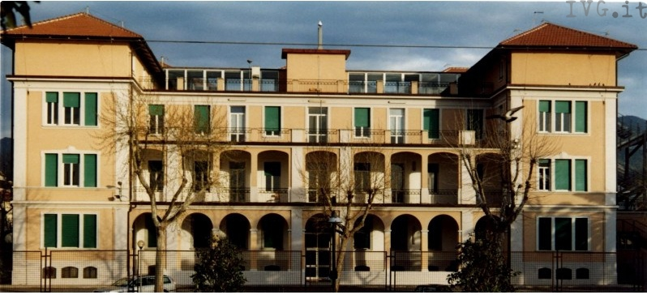

Nome : Michael
Cognome : Parodi
Eta' : 20
Data di Nascita : 11 febbraio 2001
Email : mchparodi@gmail.com
Residenza : Garlenda
Io ho conseguito il diploma di ragioneria programmatori presso l'istituto Giovanni Falcone di Loano con una valutazione di 70 centesimi
